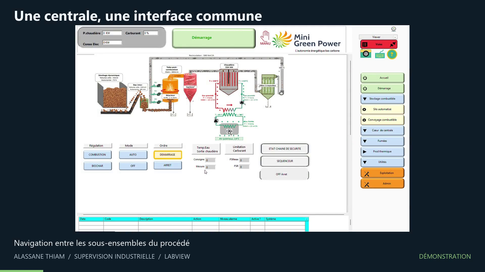

Projet de fin d’études · 2026
Supervision modulaire d’une centrale biochar
Conception d’une application LabVIEW fondée sur DQMH : lancement ordonné, navigation par subpanels, échanges par requêtes et broadcasts, centralisation des variables, simulation cyclique, alarmes et journal.
- 23 modules suivis
- Environ 71 sorties simulées
- 25 alarmes configurées
- Lecture OPC UA validée
Projet industriel — démonstration et architecture présentées sans publier le code confidentiel.